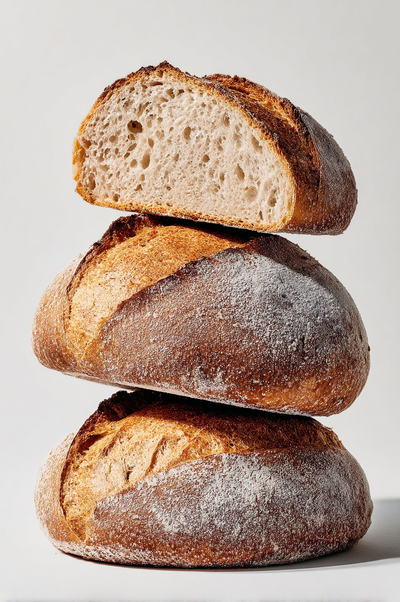

Fermentado lentamente y elaborado de forma artesanal, nuestro pan de masa madre representa el equilibrio entre tradición, tiempo y sabor.
A diferencia de otros panes, la masa madre utiliza fermentación natural, permitiendo desarrollar mejor textura, aroma y sabor.
Ver menú


La masa reposa durante horas para desarrollar sabor, textura y una estructura natural única.

Trabajamos cada masa a mano respetando técnicas tradicionales que cuidan cada detalle.

Horneamos cuidadosamente para lograr una corteza crujiente y un interior suave lleno de aroma.